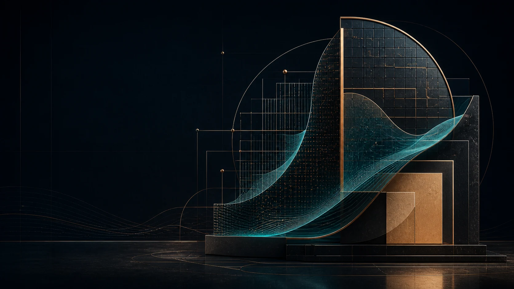

01 NVM & SEMICONDUCTOR
NVM Knowledge System
以 SRAM PUF、AES-256 與 AntiFuse OTP 為核心，涵蓋 TSMC N2 GAA、CXL 3.1、後量子密碼 (PQC) 與 40 筆規範化決策架構。
PRIMARY ENTRYNVM Knowledge Hub↗
PORTFOLIO INDEXTAIWAN · 2026
NVM 與半導體、策略遊戲、學習體驗、資料介面，以及硬體與工具——集中在同一個作品入口。 Research, systems, and experiments across silicon, software, and interactive products.
SEMICONDUCTOR IP · KNOWLEDGE SYSTEMS · INTERACTIVE PRODUCTS
01 SELECTED WORK
選擇一個領域，進入完整作品、系統說明與可用成果。
01 NVM & SEMICONDUCTOR
以 SRAM PUF、AES-256 與 AntiFuse OTP 為核心，涵蓋 TSMC N2 GAA、CXL 3.1、後量子密碼 (PQC) 與 40 筆規範化決策架構。
PRIMARY ENTRYNVM Knowledge Hub↗硬體環境、實作紀錄，以及可重用的工程工具。